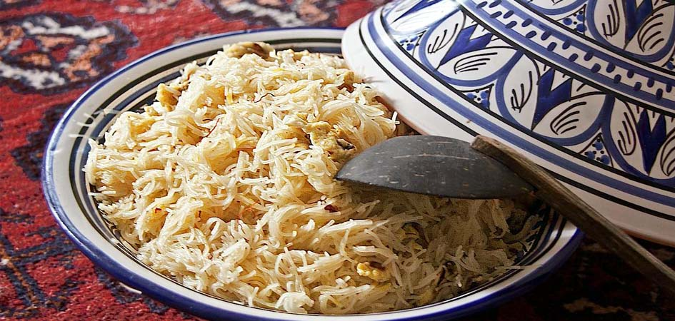
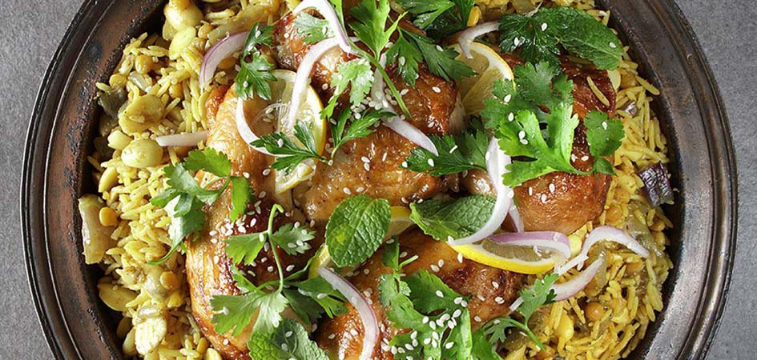
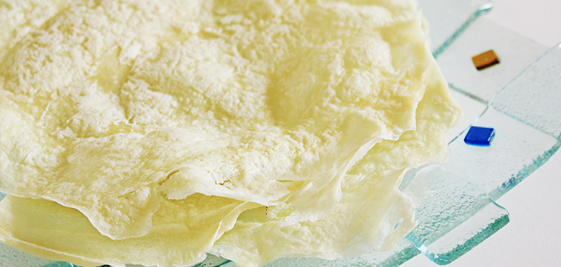

This is a wabpage about traditional UAE food and cuisine
press on the dishe's name above to move around
behind the webpage:
Hello I am salma,
I am a student interested in programing and languages. I am a self-taught developer in html and css. My next goal is java script. On my free time aside from programing i also learn german.
PS: Feel free to contact me on GitHub , E-mail , and Instagram
The Balaleet is a combination of sweet and salty elements. It is a breakfast dish made with an omelet and vermicelli. Sugar, cinnamon, saffron, cardamom, orange blossom, or rose water are added for flavor. Spices are added to the sweetened vermicelli, and the whole preparation is topped with a thin egg omelet.
Balaleet is served warm for breakfast, while it should be cold when eaten as a dessert. Sometimes, garbanzo beans and black-eyed beans also accompany Balaleet. Legends have it that Balaleet became a part of Emirati cuisine when they experimented with pasta.

There are several ways to grill fish, including the Emirati way. Traditionally, Samak Mashwi is cooked in a dome-like clay barbecue. The fish is pinned on the stick and put in the barbecue, with the other end of the post fixed to the coal bed at an oblique angle.
Date paste mixed in the marinade gives it a unique taste from other grilled fish. To properly fix the fish on the stick, you need a big fish, preferably around and fat. The fish is cooked unscaled, and the scales are removed before serving. The scales help keep the flesh from breaking apart in the heat.
Rice was not originally a part of the traditional food of the UAE. A few centuries ago, Emirati Arabs borrowed it from Indian and Persian traders. Before that, the main cereal was wheat. Machboos is the most popular rice dish in Emirati cuisine. It’s loved by both locals and ex-pats alike. But their way of preparation is different.
Machboos can be prepared with chicken, lamb, or fish. The main flavorings are cloves, cardamom, cinnamon, lemon, and sometimes saffron. Machboos is, in fact, an Emirati adoption of Indian biryani. Among all types of Machboos, lamb Machboos are the crowd favorite.

Reqaq is a crispy, paper-thin bread made of whole wheat flour. The dough is flattened and cooked in a pan or a hot iron plate, similar to the Indian flatbread chapati. The name Reqaq comes from the Arabic word Reqa, meaning thin.
This is the most common type of Emirati bread and a staple regularly made in Emirati homes, especially for dinner during Ramadan. Reqaq is served with the meat dish Tharyd (Fareed in some dialects). If you like it sweet, roll the bread, pour some honey, or have it with cheese and sugar.

These are sweet fried dumplings made of milk, sugar, butter, and flour and covered in date syrup. Luqaimat is undoubtedly the most famous traditional dessert. Though a bit calorific, these are too good to resist.
The outside of Luqaimat is crunchy, while the inside is soft and spongy. They are dipped in date syrup and garnished with sesame seeds. Flavoring is done with cardamom and saffron. Just like the dessert, Luqaimat in Arabic means small or bite-sized.